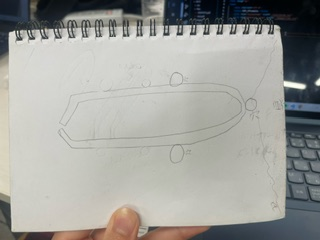
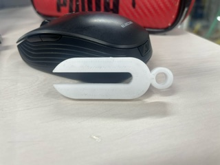

多機能ピンセット


設計データ
参考資料
作品の説明
ネックレスとして使用するための穴を持つ
首にかけて持ち運ぶことが出来るため、ピンセット用の
ケースを用意する必要が無く便利。
また、物を掴む際にかなり指の力を必要とするため
完成したてのころは失敗だと思っていたが、
指の力を鍛えることもできるピンセットであると考えれば、
一種のトレーニング器具としても捉えることが出来る。
ファッション性、持ち運びの際の利便性、トレーニング器具としての側面
一つのピンセットで三つの機能を持つ、正に多機能ピンセットである。
なぜこの作品を作ろうという思いに至ったのか
ピンセットを一般の使われ方とは全く異なる方法で使用したいと思い、
思いついたのが、誰もやっていないであろうネックレスであったから。
また、自分の身近ではピンセットを使う機会がたびたびあり、
ケースと持ち歩かなければいけないのが不便であったから。
制作プロセスのなかで調べたこと
特になし